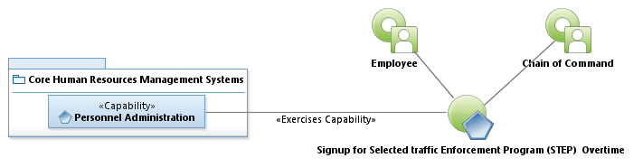
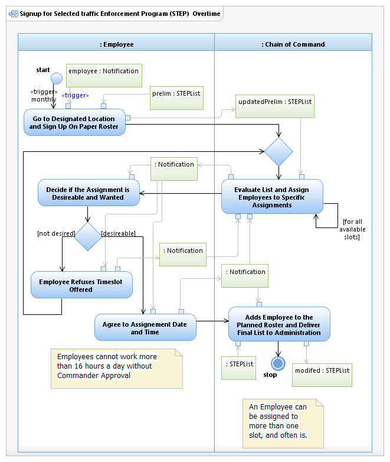

Use Case Model: Signup for Selected Traffic Enforcement Program (STEP) Overtime
Architect: First Last, IT Enterprise Architect
Date Last Modified: 4/22/2013
User Review: Gregg Olson, Sgt Jeff Crawford
Date: 4/22/2013
Recurring signup process for interested, eligible sworn officers. Eligibility is dependent upon written policy. The Chain of Command is from the Highway Enforcement (HE) department.
Follow link to Role Definitions

Use Case Model: Signup for Selected Traffic Enforcement Program (STEP) Overtime

Activity Model: Signup for Selected Traffic Enforcement Program (STEP) Overtime
Activity Documentation
| Activity | Documentation |
|---|---|
| Evaluate List and Assign Employees to Specific Assignments | This is on a first come first serve basis. The number of overtime assignments are based on funding. this changes with the type of officer that assigns (pay scale effects the funding availability). |
| Employee Refuses Timeslot Offered | The employee can turn down a timeslot, but might be offered another timeslot should the need dictate. |